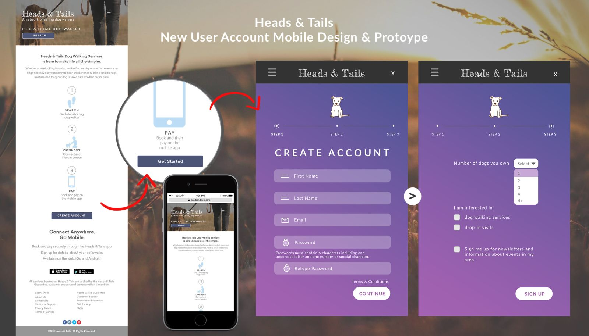

Heads & Tails
Heads & Tails Dog Walking Services was a conceptual project dreamt up from a simple need many busy people face: finding reliable, intuitive help for their pets. I wanted the brand to feel as welcoming as a neighborhood dog walker, anchored by a logo that is both approachable and instantly recognizable. For the digital experience, I designed a search-centric site around a straightforward database, ensuring the interface remained accessible for every user and making the navigation feel as effortless as a walk in the park.
Web Design
UI/UX Design
Brand Identity